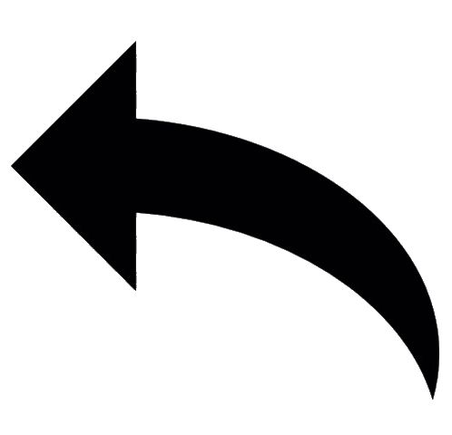
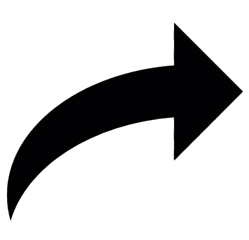

<div class="frecce">

<div *ngIf="dir[0]; else notSinistra">
     
</div>
<ng-template #notSinistra>
    
</ng-template>

<div *ngIf="dir[1]; else notBasso">
     
</div>
<ng-template #notBasso>
    
</ng-template>

<div *ngIf="dir[2]; else notDestra">
     
</div>
<ng-template #notDestra>
    
</ng-template>

<div *ngIf="dir[3]; else notMoving">
     
</div>
<ng-template #notMoving>
    
</ng-template>

</div>

